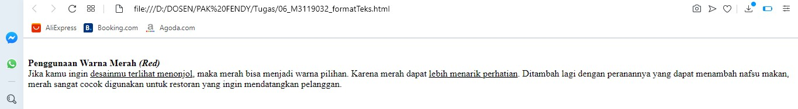

Membuat Bold dan Italic
Bold digunkan untuk membuat teks menjadi tebal pada tampilan halaman web sedangkan Italic digunakan
dalam teksmiring pada HTML.
Codingan
<!DOCTYPE html>
<html>
<head>
<title>Membuat Bold dan Italic</title>
</head>
<body>
<p>
<br>
<b>Penggunaan Warna Merah <i>(Red)</i> </b>
</br>
Jika kamu ingin <u>desainmu terlihat menonjol</u>, maka merah bisa menjadi warna pilihan.
Karena merah dapat <u>lebih menarik perhatian</u>.
Ditambah lagi dengan peranannya yang dapat menambah nafsu makan,
merah sangat cocok digunakan untuk restoran yang ingin mendatangkan pelanggan.
</p>
</body>
</html>
Hasil codingan

Analisis
script diatas menggunakan perintah untuk menggubah font seperti huruf tebal, miring, garis bawah.
Back